Recently, we moved house and in the process of packing realised how much we disliked our shoe rack. Searching around for a replacement, I realised why we had it in the first place - there weren’t any other options. The ideal shoe rack should be:
- Large enough to hold all the shoes worn day-to-day
- Small enough to not physically overwhelm the entryway
- Sturdy enough to sit on
- Have some kind of mechanism to hold coats/bags/keys
Keys and bags can also be stored on a console table, but that approach is hallway-dependent.
Pickings from the usual suspects were less than ideal. Armed with some free time and a collection of power tools, I decided to make a better one. Searching for inspiration, I came across a build for an industrial shoe rack which I quite liked, and used as the basis for this design.
Design
Megan’s design had several things I liked, including the sturdiness of the materials, the industrial feel, and the simplicity of construction. I didn’t like use of the strap tie (I always think these look unappealing, though I appreciate the structural necessity), the narrow width, and the blockiness of the single-plank construction. I decided to build an archway across the top of the frame, and use gas valves as a way to hold coats, keys, and bags. I also decided to replace the strap tie with a single horizontal bar at the bottom of frame, which would close the bottom of the arch whilst (ideally) remaining less obvious visually.
The other changes were more minor. Based on the shape of our hallway, I decided to expand the width of the shelves to ~1m. I had also planned to have three levels for storing shoes, but decided to start with two and see how it goes in practice. The design itself also needed to be flexible, as the actual size of the frame will vary slightly depending on how far the pipes are screwed into the brackets - the tighter the pipe, the shorter that section of the frame becomes.
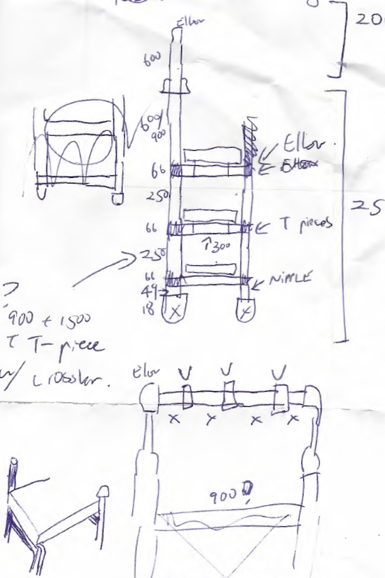
Sketching out the design. The major changes in the final version were:
- The width of the shelf was expanded to 270mm
- Four valves rather than three on the arch
- Two shelves rather than three
The horizontal cross bar is still in situ, but one level higher. - Removal of the pipe nipples on the bottom of the frame
Equipment List
- Workbench
With vice. - Circular saw
Or handsaw. - Pipe wrench
This is essential. - Tin snips
Useful for trimming the saddle clips, but not essential - Spirit level
Useful, but not essential. - Drill and driver
- Stain and varnish brush
Parts List
Wood:
- 6× ~1020mm long pieces of 90x45mm framing pine
I bought 3× 2.4m pieces, and cut them to length. The precise length will vary with the width of the frame and the size of your saddle clips. - Stain
I used a single coat of Cabot’s Cedar Water-Based Interior Stain. - Varnish
I used a two coats of Cabot’s Satin Water-Based Varnish.
If you want three shelves, you’ll instead need a total of nine lengths (three per shelf) of framing pine.
25mm Pipe:
One of the major advantages of using 25mm pipe for the frame is that the pieces can be used as extensions for the pipe wrench, which provides a huge increase in the amount of torque and simplifies frame assembly.
- 1× 900mm pipe
Horizontal support brance - 2× 600mm pipe
Form the first part of the verticals. - 4× 300mm pipe
Width of each shelf. - 2× 250mm pipe
Verticals for the front section. - 2× 150mm pipe
Verticals for the rear section. - 8× T-piece
- 2× Elbows
- 6× Hex nipple
If you don’t want the end caps, you only need 2 nipples. - 4× End caps
Optional. I didn’t use these in the end.
If you want three shelves, you’ll need instead need a total of:
- 12× T-piece
- 6× 300mm pipe
- 6× 250mm pipe
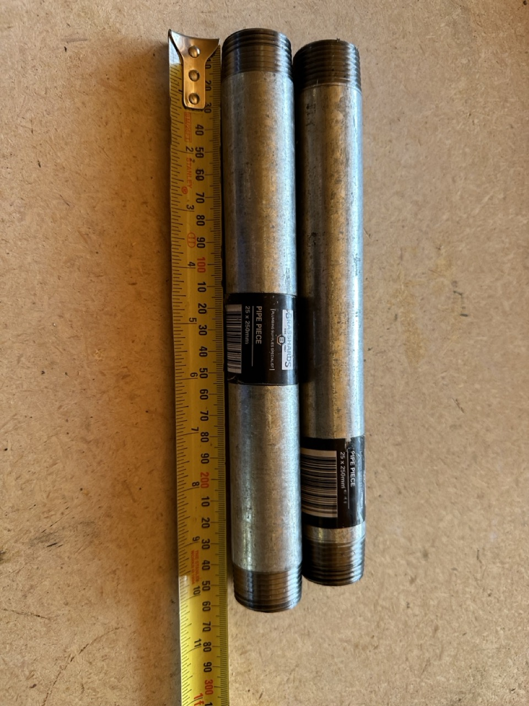
20mm Pipe:
- 2× 20-25mm pipe adaptor
- 2× 600mm pipe
For the second part of the verticals. - 2× Elbow
- 4× Valves
- 5× 150mm pipe
The number and length of these sections will vary depending on the desired number and spacing of the valves.
Other:
- 12× 25mm saddle clips
- 24× Sheet metal screws
Ideal for securing the saddle clips to the pine board.
Methods
The most difficult part of construction is frame assembly. All pipes tighten in the same direction, and pipes are not designed to create loops. This means that there is a point when completing one side of a square section of frame that tightening one joint will loosen the opposing joint. The tedium of this can be minimised1 by over-tightening one side, then engaging the opposing end and tightening that end, such that both end up moderately tightened. Maintaining a square shape whilst doing this takes some trial-and-error.
1 But not mitigated, sadly.
My second tip for assembly is to build in stages, starting with assembling the part of the frame required for the shelving. This reduces the change that you will need to go-over old ground.
0. Clean the pipes
Before beginning, clean the grease off the pipes and remove stickers. I did this at the end, and regretted it. I found acetone necessary to dissolve the glue.
1. Create the frame horizontals
The first step is to assemble the parts of the frame that the shelf rests on, as these have the least tolerance for error. Any gaps stand out, as the pipes don’t sit flush with the either end of the frame. My goal was to create 270mm of space between each T-piece (or T-piece and elbow, for the top shelf), which would snugly fit three 90mm boards.
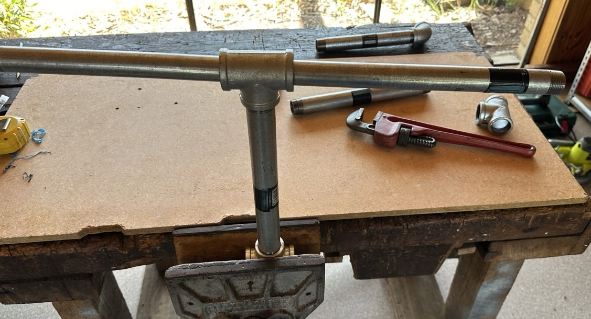
Assembling the horizontals accurately requires a good amount of torque, generated using some combination of vice, pipe wrench, and pipe.
Four horizontals are required:
- Two with a T-piece at one end, and an elbow at the other
For the top shelf. - Two with a T-piece at both ends
For the bottom shelf. If you want three shelves, you’ll need four of these.
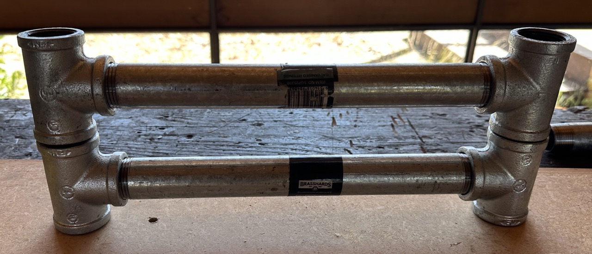
2. Create the frame verticals
The second step is to combine the horizontal sections with vertical pipe to make two pipe-squares.
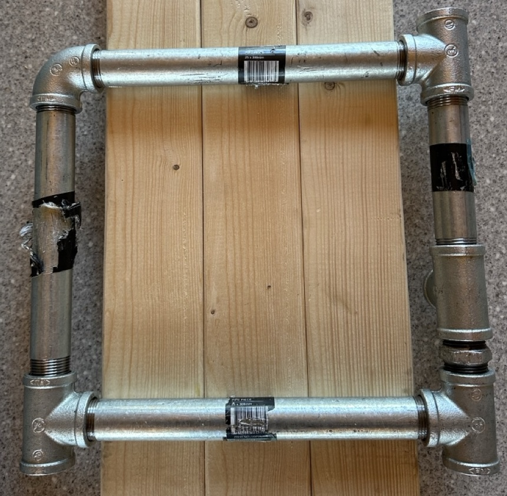
To avoid creating a pipe-trapezoid, the tightness of each vertical has to be balanced - over-tightening a join will create a shorter side. This is made more complicated by the supporting horizontal beam, as now several connections have to be adjusted to create the required length.
Before moving on, double-check the length of each square against the width of the boards.
I tried a few ways of positioning the pipes to assemble a neat square, and found the system pictured below the most effective. The vice held the top (the pipe-square is upside-down in the vice) horizontal steady, and allowed the pipe-wrench to be used to adjust the tightness of all the other joins. Getting the rear vertical correctly positioned required a lot of effort - the hex nipple, T-piece, and 150mm vertical had to be maximally tightened to provide enough play to fit the 250mm vertical in place.
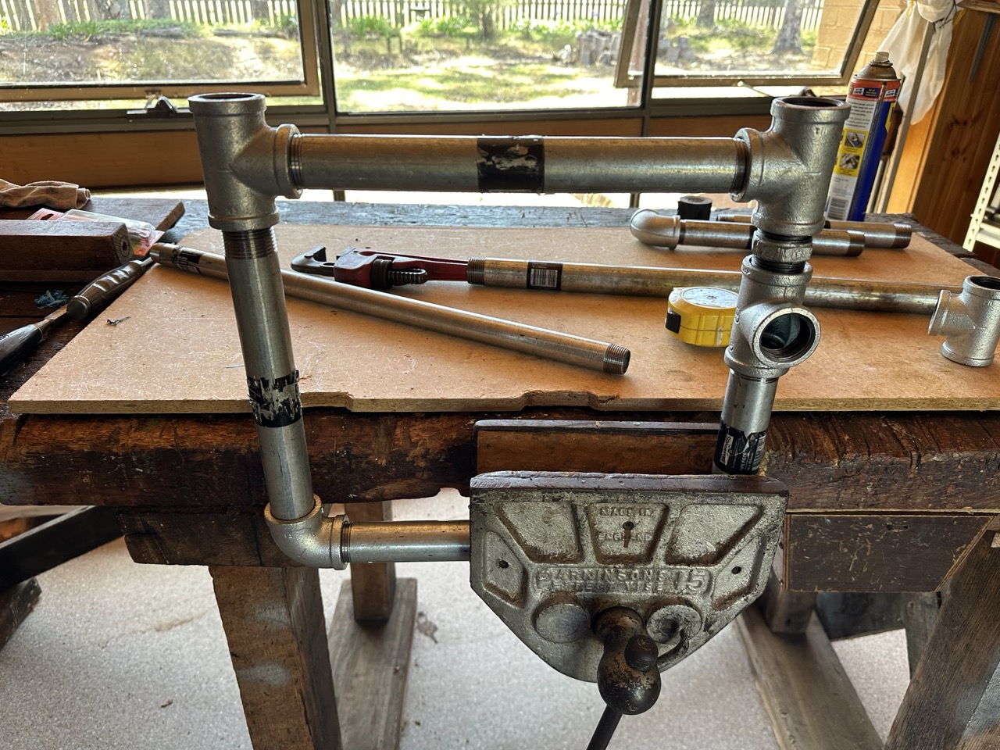
3. Assemble the frame
Next, connect each pipe-square (or pipe-rectangle, if you have build three shelves) with the 900mm horizontal piece. The length of this can be easily adjusted by rotating one square against the other.
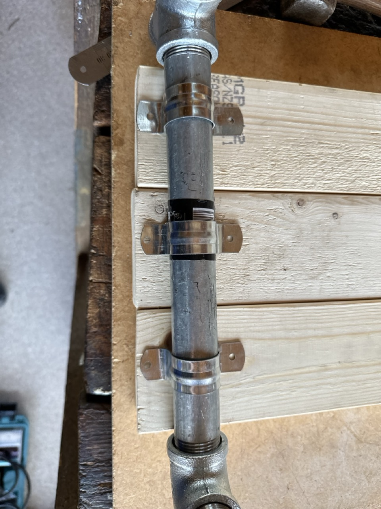
This is the time to determine the final length of the boards, as it depends on both the:
- Actual width of the frame, once assembled
- Width of the saddle clips
The saddle clips can have quite large flanges, which may lead to unsightly protrusions. You can accommodate this with longer boards, or by trimming the flange with tin snips.
At this point, the assembled frame should looking something like what is below. A quick test assembly with the wood planks is useful here, particularly to determine the width of the saddle clips. I ended up molding the saddle clips in an omega shape (Ω) to reduce their width, and trimming the edges of the flange with tin snips. You can mark and drill the pilot holes for the screws at this point if you wish.
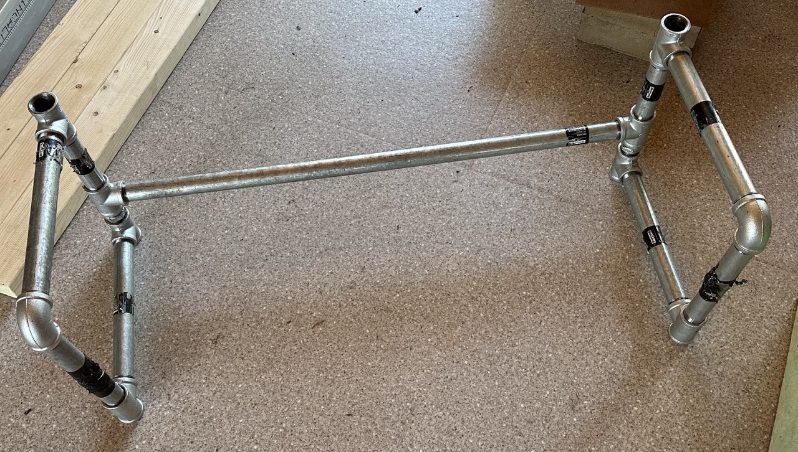
4. Prepare the wood
At this point, we take a break from frame construction to prepare the wood. Firstly, cut the boards to the desired length.
Next is staining. I tested a few different stains, and settled on a single coat of cedar:
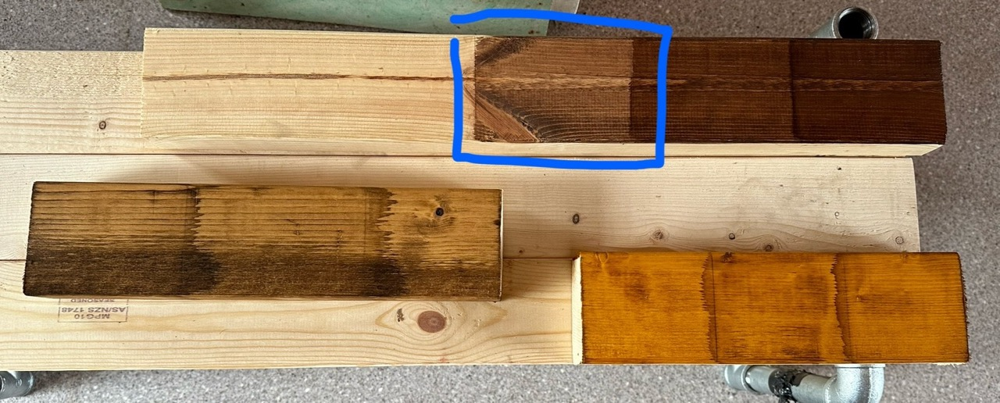
Pine off-cuts with one to three coats of stain, either:
- Cabot’s Cedar (top right)
- Feast & Watson Old Baltic (left)
- Feast & Watson Golden Teak (bottom right)
Following staining comes varnishing. I was after a moderately hardy and matte-ish finish, but ended up using an indoor furniture varnish with a semi-gloss (‘Satin’) finish. I was very happy with the result.
5. Final assembly
Last is securing the timber to the frame, and building the arch. Securing the boards is easier upside down, and so leaving the arch until last streamlines the assembly process.
Place the boards for the top shelf down, and position the frame and the saddle clips. Drill the pilot holes if you haven’t done so already, and screw in the saddle clips. Note that the saddle clips don’t need to be perfectly flush with the pipe - their main job is to prevent lateral or upwards movement of the boards,
Next, build up a foundation and screw in the second shelf.
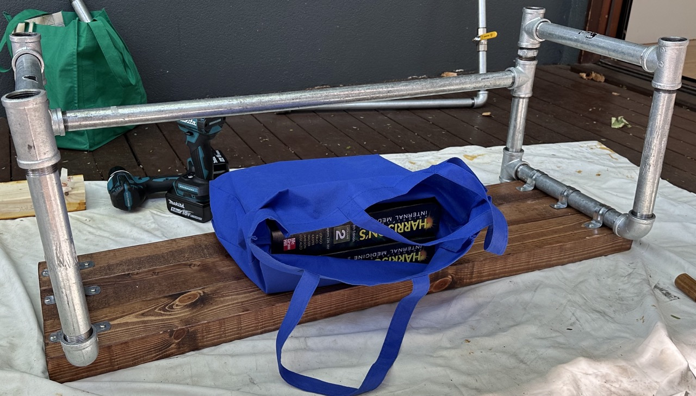
Once the shelves are screwed in, flip the frame to the upright position. Loosely attach the 60mm 25mm pipe, the 25-20mm adaptor, and the 60mm 20mm pipes. Assembling the valves and 125mm pipe segments takes some finesse, with the primary goal to secure each piece tightly, so that the weight of bags on the valve handle doesn’t loosen the fitting2.
2 This may vary depending on the brand of valve, but my valves open in a direction such that the fitting pipe would be loosened if enough weight is applied.
Results
I am quite happy with how this turned out. I elected not to put the end caps on the bottom, as I think they narrow the floor contact and will end up applying more pressure to the floorboards. The T-pieces also sit flush with the floor. It’s quite stable, and doesn’t warp when moving it around or sitting on it. At this stage I am undecided about a third shelf - the height is ideal for sitting or lacing and raising it by another ~30cm may make it uncomfortably tall.
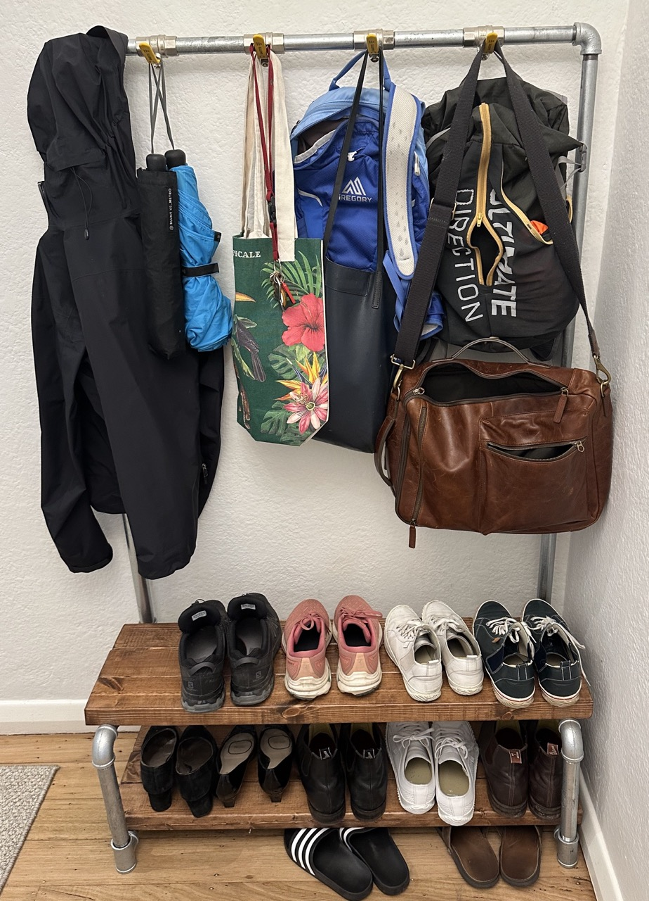